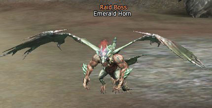

Morale Boost
El Morale Boost es un buff que podemos obtener al matar ciertos enemigos elites en Dragon Valley, estos nos
darán el buff una vez iniciemos el combate con ellos y nos durará un minuto. Hay tres niveles de este buff:
-Lvl 1:
Paralysis Resist +50%
Bleed Resist +50%
Poison Resist +50%
Stun Resist +50%
Critical rate +10%
Critical power +10%
-Lvl 2:
Paralysis Resist +80%
Bleed Resist +80%
Poison Resist +80%
Stun Resist +80%
Critical rate +30%
Critical power +15%
P.atk +15%
M.Atk +15%
-Lvl 3:
Paralysis Resist +90%
Bleed Resist +90%
Poison Resist +90%
Stun Resist +90%
Critical rate +50%
Critical power +15%
P.atk +15%
M.Atk +15%
Atk.Spd +15%
Casting,Spd +15%
Xp +20%
Para lograr subir este buff a nivel 3 requerimos por lo menos 3 puntos combinados entre toda la party para poder obtenerlo (Los miembros de la party tienen que tener tercer cambio).
Spectral Master (2.1)
Arcana Lord / Elemental Master (1.5)
Eva's Templar / Shillien Templar (1.4)
Dreadnought / Maestro / Soultaker (1.1)
SoulHound (0.4)
Titan (0.3)
Duelist / Grand Khavatari / Doombringer (0.2)
*Una party con Elemental master, Shillien Templar y Soulhound (además del resto de personajes) ya tendría el máximo y obtendría el Morale Boost lvl 3.
*Las clases se pueden repetir, si en la party se encuentran dos Spectral Master, ya tendrían el máximo.
*El buff también puede activarse cuando spoileamos a los bichos, además de las herbs de mana.
7 Raid boss
En HighFirve tenemos una quest que nos recompensará con un arma vesper a elección.
La quest se inicia en la entrada de Dragon Valley con el NPC Gilmore y se llama Legendary Tales, nos pedirá que matemos 7 Raid bosses que se summonean utilizando Large Dragon Bone en uno de los cuatro portales.
Estos bosses se summonean random, te puede tocar cualquier de los 7, no es obligatorio matar todos los que sacamos, puedes seguir summoneando la cantidad que quieras hasta que salga el que te falta.
Chances de spawn de los raids:
3% Muscle Bomber
5% Shadow Summoner
7% Spike Slasher
10% Blackdagger Wing
20% Bleeding Fly
22% Dust Rider
33% Emerald Horn
Lamentablemente el juego no te da ningún indicio de cual matamos y cual nos falta, solamente nos dará un item de quest y tendremos que acordarnos por nuestra cuenta.
Los raid bosses son:
BlackDagger Wing
Bleeding Fly
Dust Rider
Emerald Horn
Muscle Bomber
Shadow Summoner
Spike Slasher
Una vez que matemos los siete Raids, volvemos con Gilmore, seleccionamos el arma que queremos y terminaremos la quest.
*Cada raid boss tiene alguna habilidad especial que los hace complejos, son bursteables, pero algunos se pueden salir de control, desde reflect, summon de adds, sangrados infinitos y explosiones potentes que pegan en un área gigante.
¿Cómo consigo los Large Dragon Bone?
Tenemos dos formas de conseguir estos item de quest, la primera, es matar bichos en dragon valley, todos (excepto los de Lair of antharas) tienen una pequeña chance de dropearlos, mientras más vida tenga, mas chance tienen.
La segunda es una quest de una sola vez que se inicia en Hunter 's Village en el NPC Isael SilverShadow, llamada Tired of Waiting.

Nos enviará a hablar con el NPC Kitzka, en el centro de Dragon Valley (Npc: Separated Soul > The Center of Dragon Valley).

Ella nos dará a elegir entre tres recompensas, el fragmento de hueso (el que estamos buscando) u otros dos ítems para otras quest.
¡Felicitaciones! ¡Conseguiste un Large Dragon Bone!